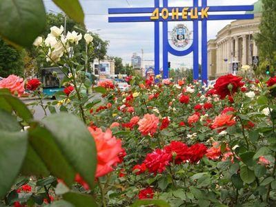

|
||||
|---|---|---|---|---|
| Главная | ||||
|
ГОРОДА УКРАИНЫ
|
Донецк – прекрасный город миллиона розДонецк расположен на востоке Украины. Его население составляет 969 247 человек. Площадь 358 км², климат умеренно-континентальный. Официальным языком является украинский и русский, хотя проживают здесь также и греки, татары, грузины, белорусы, евреи. |
ПОПУЛЯРНОЕ НА САЙТЕ
|
|||||||||
|
Город делится на 9 административных районов:
В каждом районе есть свои местные советы, которые в свою очередь подчиняются городскому совету Донецка. У города есть своя отличительная символика – это герб и флаг. В Донецке очень много образовательных заведений: 11 институтов, 5 государственных и столько же частных университетов, 3 академии, 6 колледжей, 14 техникумов и, конечно же, Донецкий Научный центр. Развита в городе и промышленность. По объёмам промышленного производства Донецк занимает второе место после Мариуполя. Здесь насчитывается 383 строительные организации, 193 промышленных предприятий, 357 предприятий, что занимаются внешнеэкономической деятельностью, а предприятий малого и среднего бизнеса больше чем 13 тыс. Для средств передвижения по городу предоставлены, маршрутные такси, троллейбусы, автобусы, трамваи. Также имеется и железнодорожный вокзал и пять станций: Донецк 2, Мандрыкино, Аэропорт, Рутченково, Мушкетово. Южный и Западный автовокзалы, 8 автостанций. К сожалению, постройка метро пока все еще находится на стадии проекта из-за нехватки денег в государстве. Зато аэропорт построен по высшим технологиям, в него было вложено 4 миллиарда гривен (примерно 500 миллионов долларов). Именно в Донецке находится самая лучшая и дорогая в Украине гостиница Донбасс-Палас, и еще 50 гостиниц разной категории. Располагается здесь и большое количество бизнес центров «А» и «Б» класса. Самым крупным признан БЦ «Северный». В Донецке очень развита спортивная инфраструктура. Еще в советские годы здесь проходили чемпионаты по боксу, теннису и легкой атлетики. Город богат на профессиональных и знаменитых футболистов, таких как: Дегтярев, Звягинцев, Лобановский и многих других. В городе расположены стадионы, которые готовы принимать футбольные соревнования: «Олимпийский», «Металлург», «Шахтер» и, конечно же, «Донбасс Арена». Культурные и развлекательные объекты Донецка представлены 11 кинотеатрами, 254 памятниками, 53 дворцами культуры и клубами, 368 библиотеками, 148 музеями. В центре города открылся цифровой планетарий. Уникальное место, которое так же обязательно следует посетить – это парк кованых фигур. Лучшим парком в Украине считается Донецкий парк имени Щербакова, в нем расположено очень много фонтанов, скульптур и памятников. На протяжении Чемпионата евро 2012 здесь была сооружена фан-зона. Строится также аквапарк, уже работает круглогодичный дельфинарий «Немо». Донецк очень красивый и озеленённый город, здесь множество бульваров, скверов, парков, а ботанический сад рад посетителям круглый год. Символом города являются розы, ведь ими засажены и парки, и розарии, и городские проспекты. |
|||||||||||
 ВИННИЦА
ВИННИЦА
|
2016 © Владислав Твердохлеб |